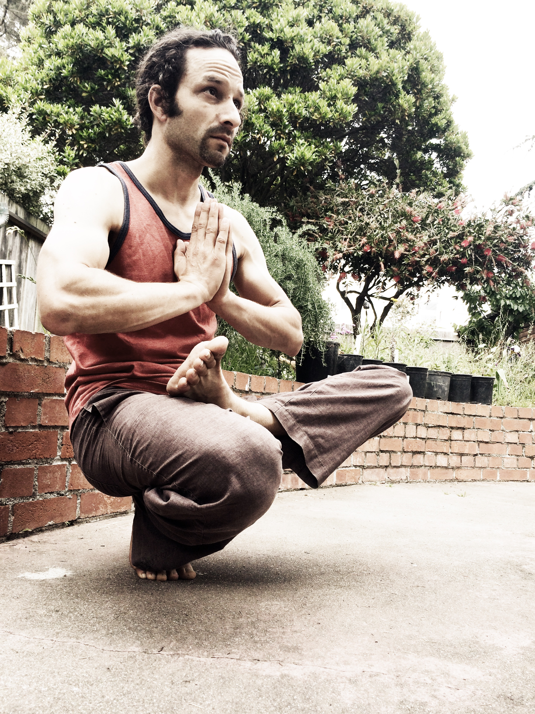
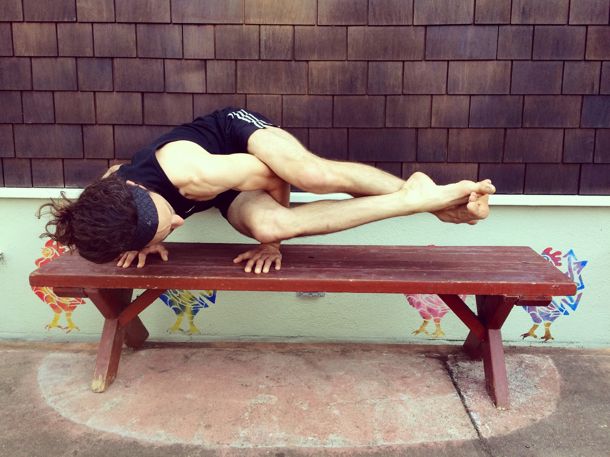
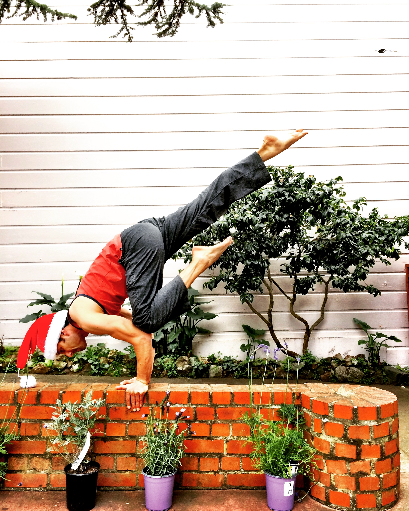
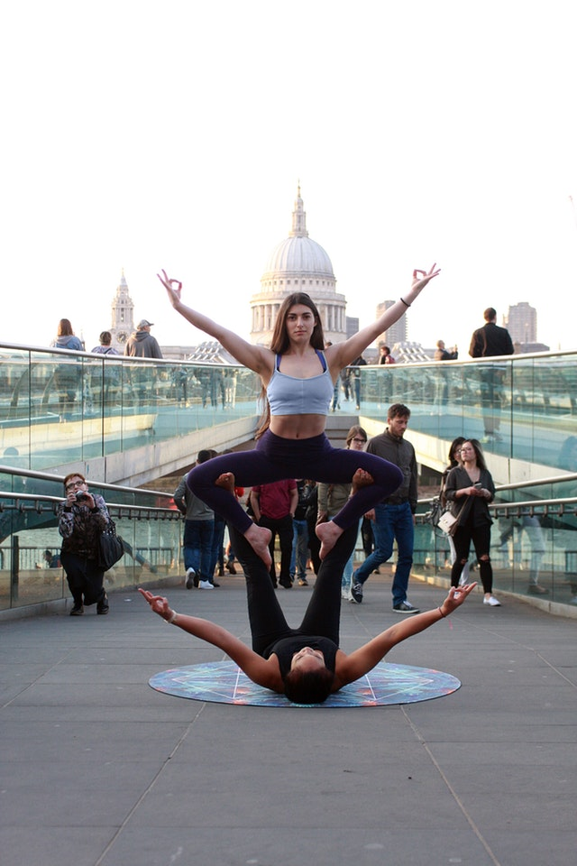
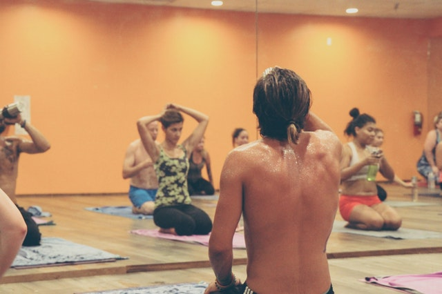

I was interested in making yoga a part of my life long before I took my first class, and not long after I started to practice yoga it became clear that I had found a lifelong hobby. Yoga, for those who may not know, is an ancient tradition from India that encompasses breathing techniques, meditation, and physical postures. My yoga practice mainly focuses on the physical branch of the discipline. There are many reasons why I enjoy practicing yoga. Among them, yoga helps me relax, build strength, and stretch.
Many of the common misunderstandings about yoga are what held me back from starting to practice in the first place. As I mentioned previously, I wanted to integrate yoga into my life for many years prior to my first class. In my case, I was nervous and afraid of being a beginner; worried that I didn't have the right body type or that yoga was too slow and that I wouldn't be physically challenged as much as I needed to be. Other myths about yoga include that the practice is only about stretching, that someone must already be flexible and in good shape to start yoga, that yoga is just for women, that it's too easy, or that yoga is a religion. None of these are true and the only way you will know if yoga is for you is to try it. Keep in mind though, like many new hobbies and experiences in life, yoga will likely be uncomfortable or challenging in the beginning and it's important to not give up too soon. I didn't start to really enjoy yoga until I had been taking classes several times a week for three months.
This is not to say that yoga is for everyone, only that it may take some time to get past the awkward beginner stage. While there are many ways in which someone can learn yoga, from books to online videos to private lessons, I still believe that a class at a yoga studio is the best way to begin. In fact, many yoga studios offer beginner level classes and/or workshops that are designed specifically for people who have no prior experience with yoga. One thing I have noticed during my personal experience with yoga however, is that oftentimes you will have to try different teachers and studios until you find the right fit.
As I alluded to earlier, yoga has helped me feel more relaxed, stronger, and flexible. It didn't all happen overnight, and yoga is a hobby that continues to help me in new ways. I particularly enjoy yoga poses that involve balance, most notably balancing on my hands. These poses tend to take time to master and require a significant amount of core strength. The process of learning such poses has taught me patience. It's also taught me how to be kind to myself, since mastering the poses takes many hours of practice and mistakes are bound to happen. The personal lessons I have learned in my yoga classes have inevitably helped me in other areas of my life.
Not only are there numerous yoga studios in existence, there are also a vast number of styles of yoga, from slow and relaxing to fast and physically demanding. Many studios offer beginner discount prices, which makes it easier to shop around until you find what you are looking for. At the end of this page you will find a list of online resources that you can use as you begin your introduction to yoga. Don't give up too soon; I strongly believe there is a style of yoga out there for everyone and that we can all benefit from this practice. Yoga is a healthy hobby and an excellent form of exercise.
